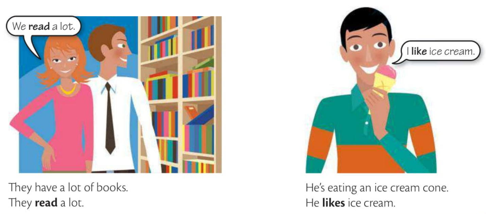

Elementary Grammar
Unit 5 • I do/work/like etc. (simple present)
A

B
true verdadeiro(a) adjective
truth(s) verdades noun substabtivo
We use the simple present for things that are true in general, or for things that happen sometimes or all the time = routine.
• General truths
I like big cities.
Your English is very good. You speak very well.
Scientific facts
The earth goes around the sun.
Water boils at 100 degree celsius.
Stars explode when they die forming a supernova.
Não se omite o pronome "it".
It rains a lot in London. Chove muito em Londres.
It costs a lot of money to build a hospital. Custa muito caro construir um hospital.
This computer = It works very well. Este computador funciona muito bem.
The story = It goes like this. A história é assim.
• Routines
I wake up early every day.
He starts work at 7:30 and finishes at 8:00 at night.
Tom works very hard.
We do a lot of different things in our free time.
C
I/you/we/they
like/work/read/live/do/watch/washes/study/cry
he/she/it affirmative only
-s
likes/works/reads/lives
If a verb ends with -y, then replace -y with -ies.-es
does/goes/watches/washes/teaches/fixes/kisses
Replace -y with -ies when a verb ends with -y preceded by a consonant.
carry -> carries
study -> studies
cry
fly -> flies
try -> tries
reply -> replies
marry -> marries
EXERCISES
1.1 ....
...